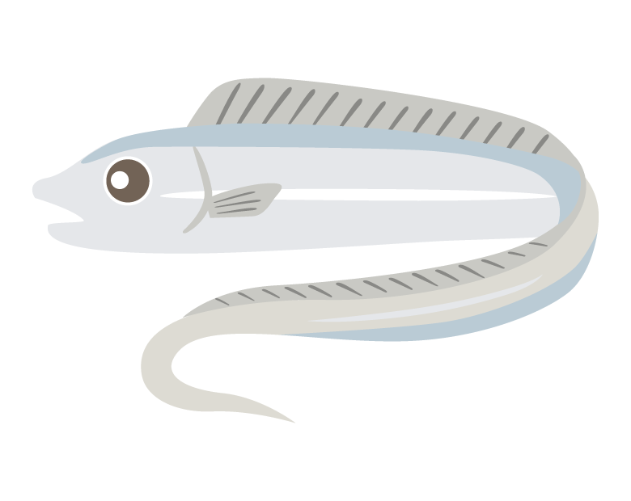

私の趣味についてご覧いただきありがとうございます！
自己紹介 について記載したページがあるので先にそちらをご覧ください！
私の趣味は釣りです！
これから私が今まで釣ってきたものの紹介をしたいとおもいます。
まずはアオリイカです。
この釣りは小学生の頃からしており、今までkg↑を釣った事がなかったのですが
2023年の12月に1.2kgを釣ったのでとても嬉しかったです。
次は太刀魚です。

この魚はとても長くて、私が釣ったのは約90cmでした。
釣り人目線で言えば、引かなかったので楽しくなかったのですが、とても美味しかったので印象に残っています。
他にも南国の魚は大体釣っており
トカジャー、ガーラ、イラブチャーなどを釣った事があります！
引っ越して来てからは釣りに行けなくなったので
３ヵ月後に帰省するのでその時に満足するまで釣りをしようと思っています！
まだ見ていない方は自己紹介を先に見て、そのあとに出身 について記載したページを
見て行ってくれると嬉しいです。